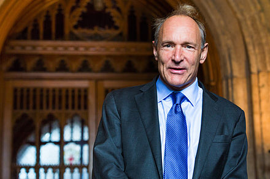

Sir Timothy John Berners-Lee
The inventor of the World Wide Web and one of Time Magazine’s ‘100 Most Important People of the 20th Century’, Sir Tim Berners-Lee is a scientist and academic whose visionary and innovative work has transformed almost every aspect of our lives. Having invented the Web in 1989 while working at CERN and subsequently working to ensure it was made freely available to all, Berners-Lee is now dedicated to enhancing and protecting the Web’s future. He is a Founding Director of the World Wide Web Foundation, which seeks to ensure the Web serves humanity by establishing it as a global public good and a basic right.
Timeline of his Life
- 1955: born in London, England
- 1976: graduated at The Queen's College, Oxford
- 1980: independent contractor at CERN. While in Geneva, he proposed a project based on the concept of hypertext
- 1980: After leaving CERN in late 1980, he went to work at John Poole's Image Computer Systems, Ltd, in Bournemouth
- 1989: CERN was the largest Internet node in Europe, and Berners-Lee saw an opportunity to join hypertext with the Internet. The NeXT Computer was used by Berners-Lee at CERN and became the world's first web server
- 1989: Berners-Lee wrote his proposal in and, in 1990, redistributed it. He used similar ideas to those underlying the ENQUIRE system to create the World Wide Web, for which he designed and built the first Web browser
- 1991: The first web site built was at CERN within the border of France, and was put online on 6 August 1991 for the first time
- 1994: Berners-Lee founded the W3C at the Massachusetts Institute of Technology. It comprised various companies that were willing to create standards and recommendations to improve the quality of the Web
- 2004: accepted a chair in computer science at the School of Electronics and Computer Science, University of Southampton, Hampshire, to work on the Semantic Web
- 2009: Berners-Lee admitted that the initial pair of slashes ("//") in a web address were "unnecessary". He told the newspaper that he easily could have designed web addresses without the slashes
Berners-Lee's Awards and Honors
- 1994: Became one of only six members of the World Wide Web Hall of Fame
- 1996: Honorary degree, University of Southampton
- 1998: Honorary doctorate, University of Essex
- 1999: Time Magazine named him one of the 100 Most Important People of the 20th century
- 2004: First recipient of Finland's Millennium Technology Prize, for inventing the World Wide Web. The cash prize, worth one million euros (about £892,000, or US$1.3 million, as of Sept 2011), was awarded on 15 June, in Helsinki, Finland, by the President of the Republic of Finland, Tarja Halonen
- 2007: Ranked Joint First, alongside Albert Hofmann, in The Telegraph's list of 100 greatest living geniuses.
- More: Wikipedia
Current work
- 2009: Then-British Prime Minister Gordon Brown announced Berners-Lee would work with the UK Government to help make data more open and accessible on the Web, building on the work of the Power of Information Task Force
- 2009: Berners-Lee launched the World Wide Web Foundation in order to "advance the Web to empower humanity by launching transformative programs that build local capacity to leverage the Web as a medium for positive change"
- 2012: Berners-Lee is president of the Open Data Institute
- 2013: The Alliance for Affordable Internet (A4AI) was launched and Berners-Lee is leading the coalition of public and private organisations that includes Google, Facebook, Intel, and Microsoft. The A4AI seeks to make Internet access more affordable so that access is broadened in the developing world, where only 31% of people are online
Quotes from Tim Berners-Lee
Anyone who has lost track of time when using a computer knows the propensity to dream, the urge to make dreams come true and the tendency to miss lunch
One of the things I like about the computer that I use is that I can write a program on it or I can download a program on to it and run it. That's kind of important to me, and that's also kind of important to the whole future of the internet... obviously a closed platform is a serious brake on innovation.
Data is a precious thing and will last longer than the systems themselves.